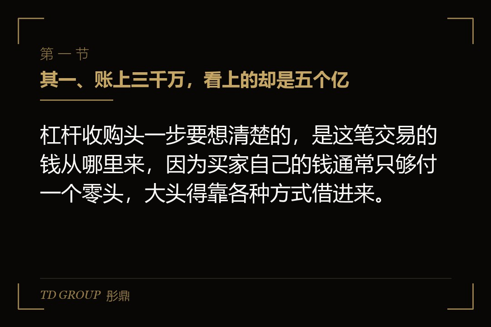
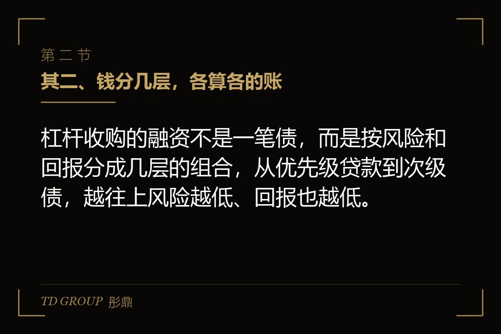
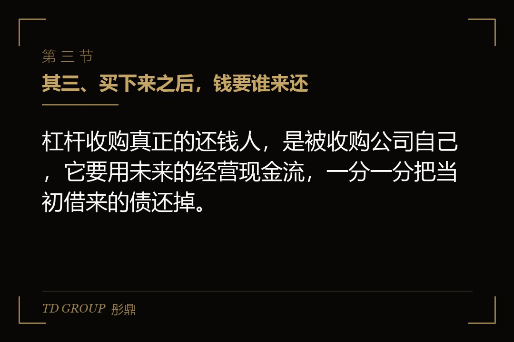

其一、账上三千万，看上的却是五个亿

结论先行：杠杆收购头一步要想清楚的，是这笔交易的钱从哪里来，因为买家自己的钱通常只够付一个零头，大头得靠各种方式借进来。
假设有家做了二十年的建材企业，账上躺着三千万现金，老板看中了一家年利润五千万的同行。那家同行设备、渠道、订单都成熟，就是原来的股东想套现离场，整体估值谈到五个亿。老板算了算，三千万连零头都不够，正常收购根本买不起。
这时候摆在他面前的，就是杠杆收购这条路：自己掏一部分，剩下的绝大多数靠借。借来的钱，抵押的不是他自己那家老厂，而是他要买的这家新公司——用标的公司的资产和未来现金流做担保。
这笔账的逻辑，跟贷款买房其实是一个道理。买一套五百万的房子，你掏一百五十万首付，剩下三百五十万靠按揭，银行看的是房子本身值不值这个钱。杠杆收购就是把同一套逻辑搬到公司收购上：买家掏一小块自有资金，剩下的靠债务，而抵押物是那家被收购的公司。
这里要先把一个关键点说破：杠杆收购里，借钱的对象表面看是买家，但真正兜底的是被收购的那家公司。买家自己的老厂可以一点都不抵押，因为资金方看中的，是标的公司那份稳定的现金流。所以这件事能不能成，从谈判桌这一头就决定了——不是看买家多有钱，是看标的多能挣钱。
其二、钱分几层，各算各的账

结论先行：杠杆收购的融资不是一笔债，而是按风险和回报分成几层的组合，从优先级贷款到次级债，越往上风险越低、回报也越低。
把一笔典型的杠杆收购融资摊开看，通常分成三层。最下面一层是自有资金，也就是买家自己掏的钱，风险最高，但如果交易成功，回报也最高。中间一层是优先级贷款，由银行或专业信贷机构提供，以标的公司的资产做抵押，利息相对低，风险最低，最优先被偿还。最上面一层是夹层或次级债，利息比优先级贷款高出一大截，往往还附带一个认股权或转股的选择权，排在优先级贷款之后才被偿还。
为什么要分成几层？因为不同资金方要的回报和能承受的风险不一样。银行要的是安全，宁可利息低一点也要优先拿回本；夹层基金要的是高回报，愿意承受更大的损失风险。分层就是把风险切碎，卖给不同胃口的资金方。
打个比方，这像一层楼里排好的还钱顺序。楼要是塌了，先保最下面那层有抵押的优先级贷款，再轮到夹层，最后才是买家自己的钱。顺序越靠前越安全，也就越便宜；越靠后越危险，但要价也越高。
其三、买下来之后，钱要谁来还

结论先行：杠杆收购真正的还钱人，是被收购公司自己，它要用未来的经营现金流，一分一分把当初借来的债还掉。
这是杠杆收购最反直觉的地方：借钱的是买家，还钱的却是被买下来的那家公司。收购完成后，买家和标的往往合并或由标的直接承担债务，标的每年的经营利润，先要拿去付利息、还本金，剩下的才是真正属于股东的。
所以判断一笔杠杆收购靠不靠谱，核心只看一件事：标的公司的现金流稳不稳、够不够还债。那家年利润五千万的建材同行，如果利润是真实的、可持续的，每年拿出三千多万还本付息，几年就能把债还到安全线以内；如果那五千万利润里有水分，或者行业一波动就掉一半，债务压力立刻就会压上来。
这正是杠杆收购和普通收购最大的区别。普通收购，买家用自己的实力兜底，买砸了最多亏自己那笔钱；杠杆收购，买家只掏了一小块，剩下的大头全靠标的自己挣回来，挣不回来，就是连锁反应。
其四、算错一笔，整盘就转不动了
结论先行：杠杆收购的失败，往往不是交易本身错，而是某一笔账在乐观里被算错了——利润虚高、现金流错配、或是债务到期错开。
把历史上那些失败的杠杆收购案例拎出来看，栽的几乎都是同一类地方。其一是利润虚高，卖方为了卖个好价钱，把一次性收益、关联交易撑出来的利润也放进报表，收购方照着这份报表去算还债能力，结果钱一到手就发现根本挣不到那么多。
这种利润虚高，往往还不是卖方故意造假，而是口径上的乐观。比如把一笔偶发的政府补贴算进经常性利润，把还没回款的大订单提前确认为收入，把关联方高价采购撑出来的毛利当成真实毛利。收购方要是照单全收，就等于用别人的乐观，给自己的杠杆上满了发条。
其二是现金流和债务错配。利润是账面上的，还债要的是真金白银的现金。一家公司利润很好，但钱都压在应收账款和存货里，账期又长，到还本付息那天手里没有现金，就会被迫去借新债还旧债，越滚越紧。
其三是债务到期没错开。如果几笔债在同一时间集中到期，而公司那段时间又正好是投入期、没有产出，就会出现一个要命的空档。聪明的结构会把债务到期日错开，让现金流的高峰和还债的高峰尽量对上。
这三处之所以反复出现，是因为它们都藏在「看起来能还」的假象后面。利润表能还，不代表现金能还；某一年能还，不代表每一年都能还。杠杆收购的成败，最终拼的不是交易做得多漂亮，而是那笔债在每一个还本付息的时点，都有真实、稳定的现金来接住。
其五、卖方和杠杆，各怀各的算盘
结论先行：杠杆收购里，卖方的动机和管理层、收购方的动机常常不一样，看清楚谁在推动这笔交易，比看财务数字更能判断值不值得做。
杠杆收购的卖方，通常是原来的大股东想退出，或者是想把一个不想要的分支业务剥离出去。他要的是快速、干净地拿到现金，所以对交易结构里债务怎么摆、以后怎么还，并不真正关心——反正卖掉之后债是别人还。
收购方里的杠杆买方，要的是用最少的自有资金拿到公司的控制权，然后通过改善经营、压低成本、甚至后续转手卖出，把自有那部分资金的回报放大到最大。管理层有时候也会参与进来，用自己的钱跟着买一点，把个人利益和公司绑定。
这几方动机搅在一起，就容易催生一个经典的问题：为了把交易做起来，有人会高估标的的价值、低估债务的成本。真正理性的做法，是先把自己当成那个几年后要还钱的人，去问标的公司到底挣不挣得动，而不是被交易的兴奋推着走。
其六、动手之前，先算清四笔账
结论先行：要不要上杠杆收购，先把自有资金比例、还债能力、现金流稳定性、退出路径这四笔账算清，比急着签协议更重要。
其一，算自有资金比例。自己掏多少，直接决定杠杆有多高。自有资金越少，杠杆越高，回报放大越猛，但扛风险的能力也越弱，一次现金流下滑就可能让本金归零。
其二，算还债能力。把标的未来几年的现金流按最保守的情形重新测一遍，看它还本付息之后还剩下多少。宁可假设最差，也不要照着卖方那份乐观报表来。
其三，算现金流稳定性。标的的利润是靠几个大客户、还是靠一堆小客户撑着？行业周期处在什么位置？现金流越稳，杠杆收购越扛得住；越不稳定，越要留足安全垫。
其四，算退出路径。杠杆收购的钱，最终还是要靠一个退出机会来兑现——可能是后续把公司做得更大再转手，可能是推动它上市，也可能是靠分红慢慢回收。没有清晰的退出路径，这笔债就成了一条看不到头的还钱路。
这四笔账都想清楚了，杠杆收购才是一把以小博大的工具；没想清楚就上，它就是一笔把未来现金流提前抵押出去的赌注。
本文为知识梳理，不构成专业意见。具体的融资结构、债务比例、担保安排与条款以交易各方的正式协议与中介机构意见为准，建议在启动前由财务顾问与律师共同核过。